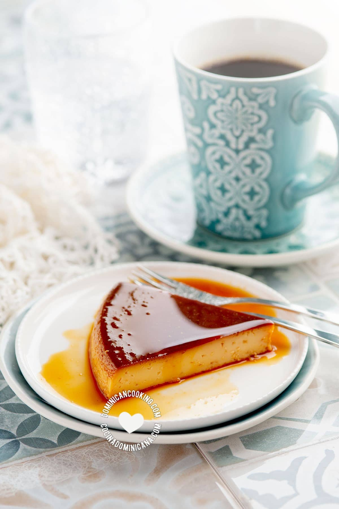

Flan
Description
Flan is a sweet dairy and egg-based custard usually flavored with vanilla. It is a popular dessert in many Latin American countries, including the Dominican Republic.
Ingredients
- ½ cup sugar , (white, granulated)
- 1 tablespoon water, (may not be used)
- 4 egg yolk, (or 5 medium)
- 1 ⅓ cup evaporated milk
- 1 ⅓ cup condensed milk
- 1 teaspoon vanilla
Steps
- Mix sugar and water and cook in a heavy saucepan over low heat until thick dark caramel forms. Make sure it does not burn! Pour carefully into a 5-cup baking pan and spread all over. Cool to room temperature, by then the caramel should have hardened. A simpler way, if your mold allows for it, just heat the sugar directly in the mold, and once it melts and turns a dark color, remove from the heat and spread on the bottom and sides of the pan.
- Mix together egg yolks, sweetened condensed milk, vanilla, and evaporated milk, stir to combine. Sieve to get rid of undissolved egg parts. Pour carefully into the baking pan, trying not to disturb the caramel layer.
- Bake in a hot water bath (bain Marie) in preheated oven to 320 ºF [160ºC] for one hour or until a toothpick inserted in the center comes out clean.
- Remove from the oven and the water bath and cool to room temperature. Chill in the fridge. Loosen the edges of the flan with a toothpick. Place a serving plate on top of the mold (one which will retain the syrup) and invert. Serve still chilled.
Notes
Be very careful with hot caramel, it can cause serious injuries.
The color of your caramel is a matter of taste, I fall on the darker
side, which will impart the flan the faintest hint of bitterness which
I love, but it should not burn. You have to remove it from the heat
just before it reaches the color you want because it will take just a
second or two to get darker or burn.
My favorite, lazy way to coat a caramel pan is to just heat the sugar
directly on the pan, so nothing else to clean. This, however, may not
be possible with every pan (bundt pans, for example), in that case,
use the first suggested method.